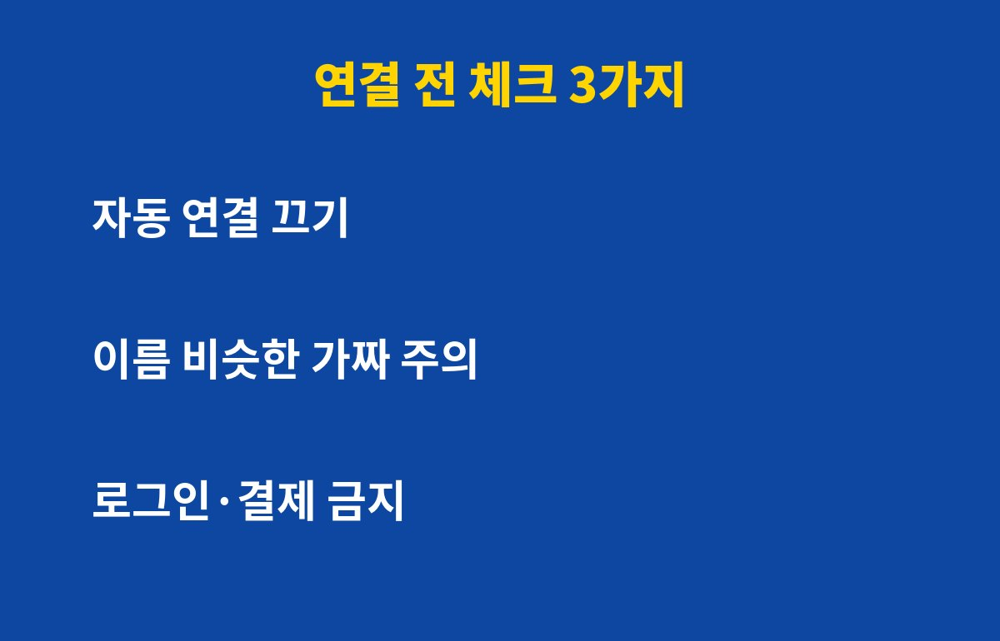
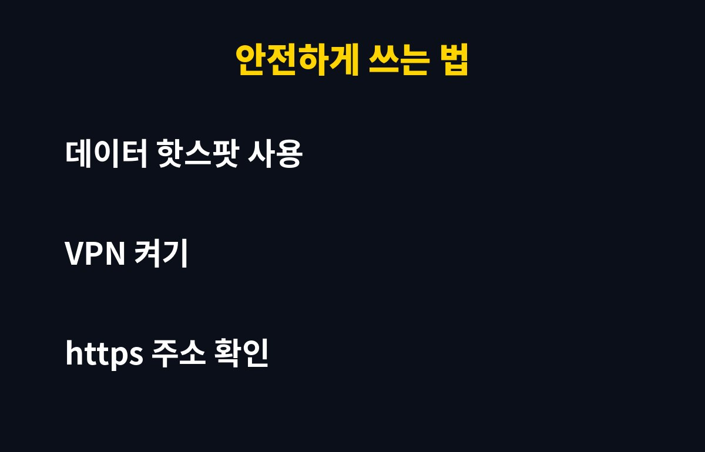

공용 와이파이, 그냥 연결해도 괜찮을까요? 카페나 지하철에서 자주 쓰신다면 오늘 글 끝까지 보셔야 해요. 모르고 쓰다가 계정이 넘어가는 경우가 실제로 있거든요.
공용 와이파이는 누구나 접속할 수 있는 열린 통로예요. 같은 망에 있는 누군가가 내 통신 내용을 엿보려고 시도할 수 있다는 뜻이죠.
특히 비밀번호 없이 열려 있는 와이파이는 암호화가 약해서 더 조심해야 해요. 주소창에 자물쇠 표시가 없는 사이트라면 입력한 내용이 그대로 노출될 수도 있어요.
더 무서운 건 가짜 와이파이예요. 카페 이름과 비슷하게 만든 이름으로 접속을 유도해서 정보를 가로채는 수법이 알려져 있어요.

가장 먼저 매장 직원에게 정확한 와이파이 이름과 비밀번호를 물어보세요. 비슷한 이름이 여러 개 떠 있다면 일단 의심하는 게 좋아요.
그리고 스마트폰의 자동 연결 기능은 꺼두세요. 한 번 접속한 와이파이에 알아서 다시 붙는 기능이 오히려 가짜 망에 붙는 통로가 될 수 있어요.
마지막으로 연결된 뒤에도 은행, 증권, 쇼핑몰 결제처럼 중요한 작업은 하지 않는 게 원칙이에요. 급하면 차라리 내 데이터로 하세요.
| 상황 | 추천 방법 |
|---|---|
| 검색·뉴스 보기 | 공용 와이파이 가능 |
| SNS·메일 로그인 | VPN 켜고 사용 |
| 은행·결제·인증 | 내 데이터(핫스팟) 사용 |
| 회사 자료 열람 | 회사 VPN 필수 |
가장 쉬운 방법은 스마트폰 핫스팟이에요. 노트북이나 태블릿도 내 폰 데이터로 연결하면 공용 망의 위험을 거의 피할 수 있어요.
두 번째는 VPN이에요. 통신을 암호화해 주기 때문에 같은 망에 있는 사람이 내용을 보기 어려워져요. 믿을 수 있는 서비스인지 꼭 확인하고 쓰세요.
세 번째는 주소가 https로 시작하는지 보는 습관이에요. 그리고 쓰고 나면 해당 와이파이 정보를 삭제하고 연결을 끊어두세요.

혹시 공용 와이파이로 로그인이나 결제를 했다면, 해당 계정의 비밀번호를 바로 바꿔주세요. 2단계 인증을 켜두면 비밀번호가 새어나가도 한 번 더 막아줘요.
금융 앱을 썼다면 이용 내역도 한 번 훑어보세요. 모르는 거래가 보이면 바로 해당 금융사에 알리는 게 좋아요.
오늘 알려드린 세 가지, 자동 연결 끄기, 중요한 작업은 내 데이터로, VPN 쓰기만 지켜도 훨씬 안전해져요. 주변에 카페 자주 가는 분이 있다면 공유해 주세요.
도움이 되셨다면 구독해 주시면 이런 IT 꿀팁을 계속 알려드릴게요.
기사·공식 발표 기준이며 출시·가격 정보는 바뀔 수 있어요.